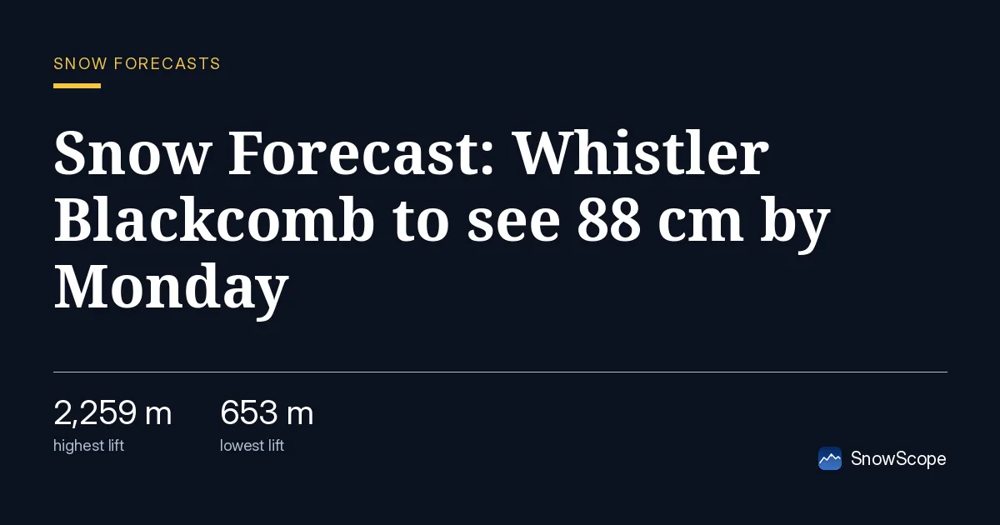
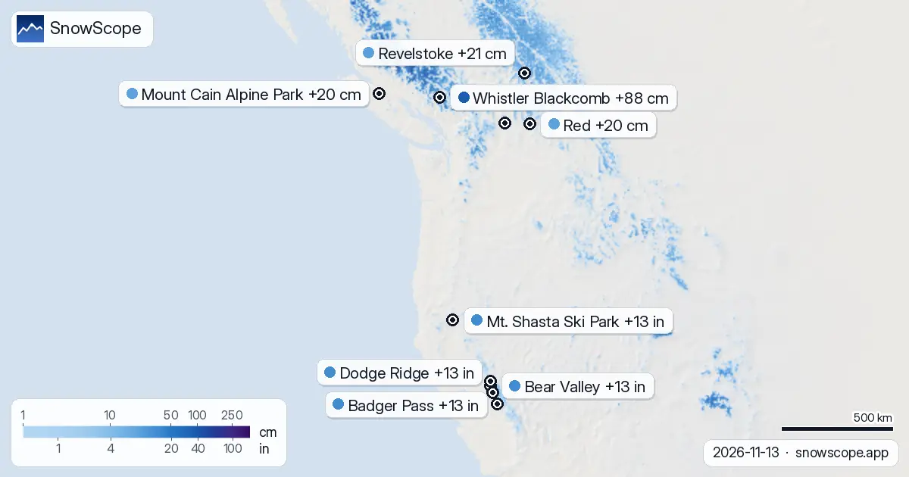

Snow Forecast: Whistler Blackcomb to see 88 cm by Monday
A three-day snow event will push Whistler Blackcomb well ahead of rivals globally, with 88 cm forecast to fall by Monday, November 16. The pattern favours high-altitude terrain across three continents, from Western Canada through the French Alps to California's Sierra Nevada.
See the live snow forecast for Whistler Blackcomb in the SnowScope appSnow depth, powder alerts and the 3D map, free.
Whistler Blackcomb dominates the forecast window
Whistler Blackcomb will see the heaviest accumulation of any resort over the next 72 hours. The forecast calls for 29 cm in the first 24 hours alone, reaching 88 cm total by Monday. This margin over second-place resorts makes it the clear choice for depth hunters seeking fresh terrain.
The snow line sits at 1300 m at Whistler, meaning the upper mountain will collect most of the precipitation as snow. Other Western Canadian resorts trail well behind: Revelstoke looks for 21 cm by Monday, while Mount Cain Alpine Park and Red will each see around 20 cm.
| # | Resort | Region | +24 h | +72 h | Snow line |
|---|---|---|---|---|---|
| 1 | Orcières Merlette | Alps · France | 9 cm | 35 cm | 2,000 m |
| 2 | La Grave | Alps · France | 7 cm | 33 cm | 2,900 m |
| 3 | Dévoluy | Alps · France | 9 cm | 32 cm | 2,100 m |
| 4 | Alpe d'Huez Grand Domaine | Alps · France | 6 cm | 31 cm | 2,200 m |
| 5 | Les Orres | Alps · France | 10 cm | 30 cm | 2,200 m |
| 6 | Montclar | Alps · France | 8 cm | 30 cm | 2,200 m |
| 7 | Les Deux Alpes | Alps · France | 6 cm | 30 cm | 2,200 m |
| 8 | Isola 2000 | Alps · France | 18 cm | 29 cm | 2,200 m |
| # | Resort | Region | +24 h | +72 h | Snow line |
|---|---|---|---|---|---|
| 1 | Bear Valley | US West · United States | 6 in (16 cm) | 13 in (34 cm) | 9,200 ft (2,800 m) |
| 2 | Dodge Ridge | US West · United States | 6 in (16 cm) | 13 in (34 cm) | 9,500 ft (2,900 m) |
| 3 | Badger Pass | US West · United States | 6 in (16 cm) | 13 in (33 cm) | 10,200 ft (3,100 m) |
| 4 | Kirkwood | US West · United States | 6 in (16 cm) | 13 in (32 cm) | 9,800 ft (3,000 m) |
| 5 | Mt. Shasta Ski Park | US West · United States | 2 in (6 cm) | 13 in (32 cm) | 5,200 ft (1,600 m) |
| 6 | Kingvale | US West · United States | 6 in (16 cm) | 12 in (31 cm) | – |
| 7 | China Peak | US West · United States | 8 in (20 cm) | 12 in (30 cm) | 11,200 ft (3,400 m) |
| 8 | Palisades Tahoe Alpine Meadows | US West · United States | 6 in (14 cm) | 12 in (30 cm) | 8,500 ft (2,600 m) |
| # | Resort | Region | +24 h | +72 h | Snow line |
|---|---|---|---|---|---|
| 1 | Whistler Blackcomb | Western Canada · Canada | 29 cm | 88 cm | 1,300 m |
| 2 | Revelstoke | Western Canada · Canada | 4 cm | 21 cm | 2,300 m |
| 3 | Mount Cain Alpine Park | Western Canada · Canada | 2 cm | 20 cm | 1,400 m |
| 4 | Red | Western Canada · Canada | 2 cm | 20 cm | 2,200 m |
| 5 | Mt. Baldy Family | Western Canada · Canada | 3 cm | 17 cm | 2,000 m |
| 6 | Apex | Western Canada · Canada | 7 cm | 16 cm | 1,900 m |
| 7 | Big White | Western Canada · Canada | 4 cm | 16 cm | 2,100 m |
| 8 | Whitewater | Western Canada · Canada | 1 cm | 16 cm | 2,400 m |

French Alps: a broad band of 30 cm or more
The Alps will fare better than recent weeks. Orcières Merlette leads the European lineup with 35 cm by Monday, followed closely by La Grave at 33 cm and Dévoluy at 32 cm. All three sit in a sweet spot where the snow line—between 2000 m and 2100 m—lands below their peaks.
A second tier of resorts stretches from Alpe d'Huez Grand Domaine down through Montclar and Les Deux Alpes, each picking up around 30 to 31 cm. Les Orres will also see 30 cm. The timing favours Friday afternoon and Saturday for the heaviest falls, with snow continuing through Sunday.

US West Sierra: a consistent 32–34 cm across the high passes
California's high country will capture this system before it weakens. Bear Valley, Dodge Ridge and Badger Pass form a cluster all forecast for 33–34 cm (13 in) by Monday, with 16 cm (6 in) falling in the next 24 hours. Kirkwood follows at 32 cm (13 in), while Kingvale sits at 31 cm (12 in).
China Peak stands out with 20 cm (8 in) in the first day alone—the fastest single-day rate on the US West list—though its three-day total settles at 30 cm (12 in). The snow line reaches 2800–3400 m across the region, so lower elevation resorts will see a rain–snow mix or rain at base elevations.
Timing and height matter most
Peak snowfall arrives Friday through Sunday. Resorts above 2600 m will see the best powder-to-rain ratio and preserve base depths longer as the temperature profile shifts. Below 2200 m, especially in the US West, early snow may turn slushy if afternoon sun returns.
The snow line is the key dividing line: above it, nearly all precipitation falls as snow; below it, mixed or wet conditions dominate. At Whistler, terrain above 1300 m will collect pure snow throughout. In the French Alps, focus on runs at 2000 m and higher for the driest accumulation.
What this means for your plan
If you can ski Friday or Saturday, Whistler Blackcomb and the high French Alps will give the freshest turns. By Monday, all three regions will have accumulated significant new snow, but the best on-snow conditions tend to be within 12 hours of the final flakes. Early season snow also tends to settle quickly, so a 35 cm forecast may ski lighter than midsummer snow.
Watch for updates as forecasts can shift. Early-season coverage is thin in many areas, so inspect conditions on arrival and avoid terrain where rocks or stumps might be lurking under fresh cover.
Tips for skiers
- Target Whistler Blackcomb or the high French Alps (Orcières Merlette, La Grave) for the deepest new snow by Sunday evening.
- In the US West, Bear Valley and Dodge Ridge will have similar totals; choose based on which side of the Sierra suits your schedule.
- Stay above 2000 m in the Alps and 2600 m in California to avoid rain; snow lines matter more than resort elevation in early season.
- Friday afternoon or Saturday morning will offer the best untracked snow; conditions may consolidate by Monday.
- Consult the official avalanche bulletin before touring off-piste, and watch for rocks and terrain traps hidden under thin early-season snow.
About these numbers
Resort snow depths are the deepest snow on the resort's upper slopes on the date shown; they are estimates for an area, not a measurement at one point. Forecasts can change. Always read the official avalanche bulletin before going off-piste.
Official avalanche bulletins: EAWS (Europe) · avalanche.org (US) · Avalanche Canada
Cite this report
For research, teaching or the press: the numbers and charts are free to reuse under CC BY 4.0 with this citation.
SnowScope (2026), Snow Forecast: Whistler Blackcomb to see 88 cm by Monday, https://snowscope.app/blog/en/2026/11/where-most-snow-falls-next-72-hours-13-november-2026.html, accessed 2026-11-13
SnowScope (Atlas Labs). (2026, November 13). Snow Forecast: Whistler Blackcomb to see 88 cm by Monday. SnowScope snow reports. https://snowscope.app/blog/en/2026/11/where-most-snow-falls-next-72-hours-13-november-2026.html
BibTeX
@misc{snowscope2026wheremostsnowfallsnext72,
author = {{SnowScope (Atlas Labs)}},
title = {Snow Forecast: Whistler Blackcomb to see 88 cm by Monday},
year = {2026},
month = nov,
howpublished = {\url{https://snowscope.app/blog/en/2026/11/where-most-snow-falls-next-72-hours-13-november-2026.html}},
note = {Published 2026-11-13 10:07 UTC; accessed 2026-11-13}
}· CC BY 4.0 · Methods, data and tools →
Whistler Blackcomb: snow and temperature by height, this winter vs last (tools) →
Follow Whistler Blackcomb
Free: a message when fresh snow is coming, and the forecast every morning.
More snow reports

Whistler Blackcomb leads with 53 cm in 72 hours. Snow forecast across Europe, US and Canada on 10 November.

The snow is not done yet: we expect 13 in (34 cm) at Bear Valley, 13 in (34 cm) at Dodge Ridge and 13 in (33 cm) at Badger Pass by 16 November. A …

Dévoluy snow outlook: in line for 24–32 cm by 16 November (Alps). The next few days look decidedly unsettled in the Alps, with the heaviest snow …